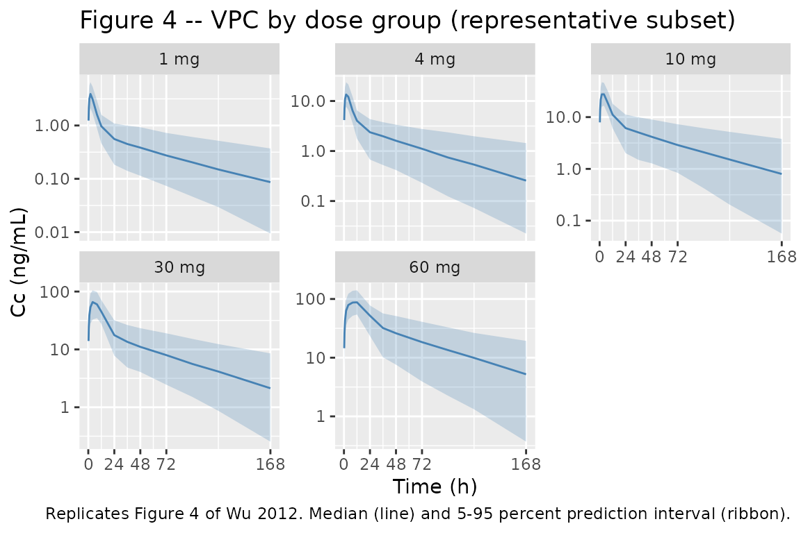
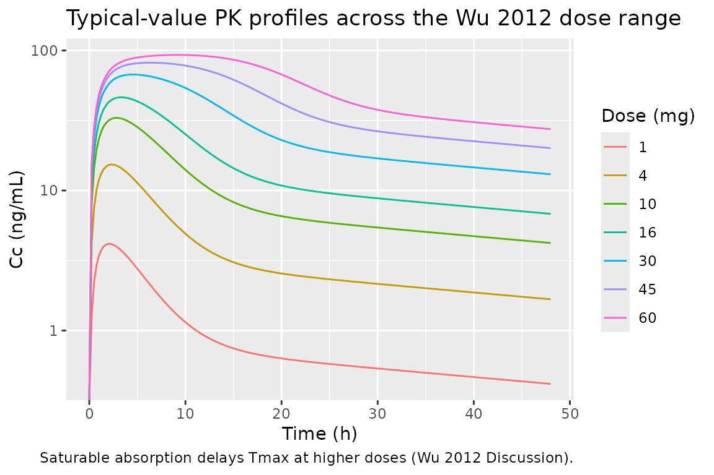
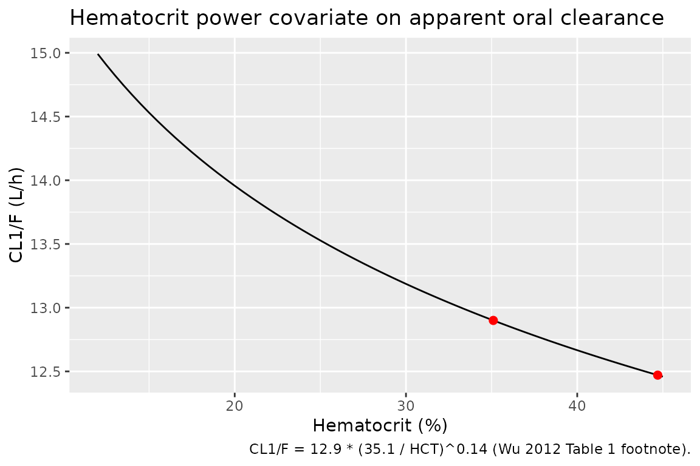

Model and source
- Citation: Wu K, Cohen EEW, House LK, Ramirez J, Zhang W, Ratain MJ, Bies RR. Nonlinear Population Pharmacokinetics of Sirolimus in Patients With Advanced Cancer. CPT Pharmacometrics Syst Pharmacol. 2012;1(11):e17. doi:10.1038/psp.2012.18
- Description: Two-compartment population PK model for oral sirolimus with saturable Michaelis-Menten absorption in patients with advanced cancer (Wu 2012). Hematocrit power covariate on apparent oral clearance.
- Article: https://doi.org/10.1038/psp.2012.18
Wu, Cohen, House, Ramirez, Zhang, Ratain, and Bies (University of Chicago and Indiana University) pooled whole-blood sirolimus concentrations from four phase-I oral-dosing trials in patients with advanced solid tumors to develop the first population-PK model of sirolimus that explicitly characterises nonlinear absorption. The structural model is a two-compartment disposition system with saturable Michaelis-Menten input from an intestinal-lumen compartment into the central compartment (Results, page 2; Figure 2). Hematocrit was the only significant covariate retained after stepwise forward addition / backward elimination, modifying apparent oral clearance via a power form. Doses spanned 1 to 60 mg per week (plus one trial of 4 mg once daily); 16 of 808 raw samples (2.0 percent) were below the limit of quantification and were excluded in the final model (the M3 method was tested but not retained because it did not improve the fit).
Population
The cohort included 76 outpatients with advanced solid tumors (39 male, 37 female; 48.7 percent female) enrolled in four phase-I trials at The University of Chicago. Mean age was 57.7 years (range 22-83), mean body weight 79.76 kg (range 32.8-154.6), mean hematocrit 35.0 percent (range 11.8-44.7), mean hemoglobin 11.83 g/dL (range 7.5-15.7), and mean creatinine 0.85 mg/dL (range 0.3-1.4). All patients had at least mildly impaired hematocrit (median 35.0 percent vs. healthy adult typical 40-45 percent), consistent with the disease and prior therapy context. Patient demographics are summarised in Wu 2012 Table 2; trial structure (dose ranges, sampling schedules) is in Table 3.
The same information is available programmatically via the model’s
population metadata.
mod <- readModelDb("Wu_2012_sirolimus")
str(rxode2::rxode(mod)$population)
#> ℹ parameter labels from comments will be replaced by 'label()'
#> List of 14
#> $ species : chr "human"
#> $ n_subjects : int 76
#> $ n_observations: int 563
#> $ n_studies : int 4
#> $ age_range : chr "22-83 years"
#> $ age_median : chr "mean 57.7 years"
#> $ weight_range : chr "32.8-154.6 kg"
#> $ weight_median : chr "mean 79.76 kg"
#> $ sex_female_pct: num 48.7
#> $ race_ethnicity: chr "Not reported (single-centre cohort at The University of Chicago)."
#> $ disease_state : chr "Adults with advanced solid tumors enrolled in phase I trials of oral sirolimus."
#> $ dose_range : chr "1-60 mg/week oral sirolimus, plus one trial of 4 mg once daily. Liquid formulation in trials 1, 3, and 4; table"| __truncated__
#> $ regions : chr "USA (single centre)."
#> $ notes : chr "Wu 2012 Table 2 baseline demographics: hematocrit 35.0% (11.8-44.7), hemoglobin 11.83 g/dL (7.5-15.7), creatini"| __truncated__Source trace
The per-parameter origin is recorded as an in-file comment next to
each ini() entry in
inst/modeldb/specificDrugs/Wu_2012_sirolimus.R. The table
below collects the same information in one place for review.
| Equation / parameter | Value | Source location |
|---|---|---|
lcl (CL1/F, L/h) at reference HCT 35.1 percent |
12.9 | Table 1 NONMEM theta1 (16.3 percent RSE) |
lvc (V1/F, L) |
53.4 | Table 1 NONMEM V1/F (38.0 percent RSE) |
lq (CL2/F, L/h) |
29.0 | Table 1 NONMEM CL2/F (8.17 percent RSE) |
lvp (V2/F, L) |
611 | Table 1 NONMEM V2/F (11.3 percent RSE) |
lvmax (Vm, mg/h) |
4.56 | Table 1 NONMEM Vm (37.7 percent RSE); units inferred from mass-balance of d/dt(A1) = -Vm*A1/(Km+A1) – paper prints “ug/L.h” but the equation requires mass/time given A1, Km in mg |
lkm (Km, mg) |
13.8 | Table 1 NONMEM Km (50.3 percent RSE) |
e_hct_cl (power exponent on (35.1/HCT) for CL) |
0.14 | Table 1 NONMEM theta2 (55.4 percent RSE); reference HCT = 35.1 percent per Table 1 footnote |
etalcl (omega^2 for IIV on CL1/F) |
0.2425 | Table 1 NONMEM IIV CL1/F = 52.4 percent CV; omega^2 = log(1 + 0.524^2) |
etalvc (omega^2 for IIV on V1/F) |
0.2425 | Table 1 NONMEM IIV V1/F = 52.4 percent CV; omega^2 = log(1 + 0.524^2) |
etalq (omega^2 for IIV on CL2/F) |
0.4035 | Table 1 NONMEM IIV CL2/F = 70.5 percent CV; omega^2 = log(1 + 0.705^2) |
etalvp (omega^2 for IIV on V2/F) |
0.0366 | Table 1 NONMEM IIV V2/F = 19.3 percent CV; omega^2 = log(1 + 0.193^2) |
propSd (proportional residual SD, fraction) |
0.0217 | Table 1 NONMEM proportional = 2.17 percent (97.0 percent RSE) |
addSd (additive residual SD, ng/mL) |
0.5 | Table 1 NONMEM additive = 0.5 ng/mL (35.5 percent RSE) |
ODE d/dt(depot) = -Vm * depot / (Km + depot)
|
n/a | Results page 2 (Eq. for dA1/dt) |
ODE
d/dt(central) = Vm*depot/(Km+depot) - CL1/V1*central - CL2/V1*central + CL2/V2*peripheral1
|
n/a | Results page 2 (Eq. for dA2/dt) |
ODE
d/dt(peripheral1) = CL2/V1*central - CL2/V2*peripheral1
|
n/a | Results page 2 (Eq. for dA3/dt) |
Combined residual Cobs = Cpred * (1 + eps1) + eps2
|
n/a | Results page 2, Methods Eq. 1 |
Virtual cohort
Original observed concentration data are not publicly available. The figures below use a virtual cohort whose hematocrit distribution matches the Wu 2012 Table 2 baseline summary (mean 35 percent, range 12-45 percent), modelled as a truncated normal with SD chosen to span the observed range.
set.seed(20121205)
n_per_dose <- 200L
doses_mg <- c(1, 4, 10, 30, 60) # representative subset of Wu 2012 dose levels
sample_times_h <- c(0, 0.25, 0.5, 1, 2, 4, 8, 12, 24, 36, 48, 72, 96, 120, 168)
draw_hct <- function(n) {
out <- rnorm(n, mean = 35, sd = 6)
pmin(pmax(out, 12), 45)
}
make_dose_cohort <- function(dose_mg, n, id_offset) {
ids <- id_offset + seq_len(n)
hct <- draw_hct(n)
dose_rows <- tibble(
id = ids,
time = 0,
evid = 1L,
amt = dose_mg,
cmt = "depot",
HCT = hct,
dose_group = paste0(dose_mg, " mg")
)
obs_rows <- tibble(
id = rep(ids, each = length(sample_times_h)),
time = rep(sample_times_h, times = n),
evid = 0L,
amt = 0,
cmt = NA_character_,
HCT = rep(hct, each = length(sample_times_h)),
dose_group = paste0(dose_mg, " mg")
)
bind_rows(dose_rows, obs_rows) |>
arrange(id, time, desc(evid))
}
events <- bind_rows(lapply(seq_along(doses_mg), function(i) {
make_dose_cohort(doses_mg[i], n_per_dose, id_offset = (i - 1L) * n_per_dose)
}))
stopifnot(!anyDuplicated(unique(events[, c("id", "time", "evid")])))
events$dose_group <- factor(events$dose_group, levels = paste0(doses_mg, " mg"))Simulation
The packaged model carries the proportional plus additive residual error and log-normal IIV terms from Wu 2012 Table 1, so a stochastic simulation produces the spread used in the visual-predictive-check plot.
mod <- readModelDb("Wu_2012_sirolimus")
sim <- rxode2::rxSolve(
mod,
events = as.data.frame(events),
keep = c("dose_group", "HCT")
) |>
as.data.frame()
#> ℹ parameter labels from comments will be replaced by 'label()'Replicate published figures
Figure 4 – VPC by dose group
Wu 2012 Figure 4 shows the visual predictive check for each dose level (1, 2, 3, 4, 5, 6, 8, 10, 15, 16, 20, 25, 30, 35, 45, 60 mg) with the observed-data overlay. The panels reproduced here cover a representative subset of those dose levels and show the median and the 5th-95th percent prediction interval of simulated concentrations versus time.
vpc_df <- sim |>
filter(!is.na(Cc), time > 0) |>
group_by(dose_group, time) |>
summarise(
Q05 = quantile(Cc, 0.05, na.rm = TRUE),
Q50 = quantile(Cc, 0.50, na.rm = TRUE),
Q95 = quantile(Cc, 0.95, na.rm = TRUE),
.groups = "drop"
)
ggplot(vpc_df, aes(time, Q50)) +
geom_ribbon(aes(ymin = pmax(Q05, 1e-3), ymax = Q95), alpha = 0.25, fill = "steelblue") +
geom_line(colour = "steelblue") +
facet_wrap(~ dose_group, scales = "free_y") +
scale_x_continuous(breaks = c(0, 24, 48, 72, 168)) +
scale_y_log10() +
labs(x = "Time (h)", y = "Cc (ng/mL)",
title = "Figure 4 -- VPC by dose group (representative subset)",
caption = "Replicates Figure 4 of Wu 2012. Median (line) and 5-95 percent prediction interval (ribbon).")
Saturable absorption – Tmax / Cmax vs dose
Figure 1 of Wu 2012 shows that dose-normalised AUC(0-Inf) declines with dose (slope significantly different from zero, P < 0.01), evidence of saturable absorption kinetics. The structural-model consequence is that Tmax is delayed and Cmax is sub-proportional at higher doses. Simulating typical-value trajectories (random effects zeroed) for the dose range studied makes this explicit.
mod_typical <- rxode2::zeroRe(mod)
#> ℹ parameter labels from comments will be replaced by 'label()'
dense_times <- seq(0, 48, by = 0.25)
make_typical <- function(dose_mg, hct = 35.1) {
ev <- rxode2::et(amt = dose_mg, cmt = "depot") |>
rxode2::et(dense_times)
ev$HCT <- hct
as.data.frame(rxode2::rxSolve(mod_typical, events = ev, atol = 1e-10, rtol = 1e-8)) |>
mutate(dose_mg = dose_mg)
}
typical <- bind_rows(lapply(c(1, 4, 10, 16, 30, 45, 60), make_typical))
#> ℹ omega/sigma items treated as zero: 'etalcl', 'etalvc', 'etalq', 'etalvp'
#> ℹ omega/sigma items treated as zero: 'etalcl', 'etalvc', 'etalq', 'etalvp'
#> ℹ omega/sigma items treated as zero: 'etalcl', 'etalvc', 'etalq', 'etalvp'
#> ℹ omega/sigma items treated as zero: 'etalcl', 'etalvc', 'etalq', 'etalvp'
#> ℹ omega/sigma items treated as zero: 'etalcl', 'etalvc', 'etalq', 'etalvp'
#> ℹ omega/sigma items treated as zero: 'etalcl', 'etalvc', 'etalq', 'etalvp'
#> ℹ omega/sigma items treated as zero: 'etalcl', 'etalvc', 'etalq', 'etalvp'
tmax_cmax <- typical |>
group_by(dose_mg) |>
summarise(
Cmax = max(Cc, na.rm = TRUE),
Tmax_h = time[which.max(Cc)],
.groups = "drop"
) |>
mutate(Cmax_per_mg = Cmax / dose_mg)
knitr::kable(
tmax_cmax,
caption = "Typical-value Cmax, Tmax, and Cmax/dose vs dose (saturable absorption produces delayed Tmax and sub-proportional Cmax)."
)| dose_mg | Cmax | Tmax_h | Cmax_per_mg |
|---|---|---|---|
| 1 | 4.159171 | 2.00 | 4.159171 |
| 4 | 15.322329 | 2.25 | 3.830582 |
| 10 | 33.001039 | 2.75 | 3.300104 |
| 16 | 46.291025 | 3.25 | 2.893189 |
| 30 | 67.303038 | 4.50 | 2.243435 |
| 45 | 81.773503 | 6.25 | 1.817189 |
| 60 | 92.897035 | 9.25 | 1.548284 |
ggplot(typical, aes(time, Cc, colour = factor(dose_mg), group = dose_mg)) +
geom_line() +
scale_y_log10() +
labs(x = "Time (h)", y = "Cc (ng/mL)", colour = "Dose (mg)",
title = "Typical-value PK profiles across the Wu 2012 dose range",
caption = "Saturable absorption delays Tmax at higher doses (Wu 2012 Discussion).")
#> Warning in scale_y_log10(): log-10 transformation introduced
#> infinite values.
Hematocrit covariate effect on CL1/F
The Discussion (page 3) reports that increasing hematocrit from 35.1 percent to 44.7 percent decreases apparent clearance from 12.9 L/h to 12.4 L/h. Reproducing the algebraic relation:
hct_grid <- tibble(
HCT = seq(12, 45, by = 0.5),
CL_per_h = 12.9 * (35.1 / HCT)^0.14
)
key_pts <- tibble(
HCT = c(35.1, 44.7),
CL_per_h = 12.9 * (35.1 / c(35.1, 44.7))^0.14,
paper_value = c(12.9, 12.4)
)
knitr::kable(
key_pts,
digits = 2,
caption = "Typical CL1/F at the two HCT points named in the Discussion (page 3 of Wu 2012)."
)| HCT | CL_per_h | paper_value |
|---|---|---|
| 35.1 | 12.90 | 12.9 |
| 44.7 | 12.47 | 12.4 |
ggplot(hct_grid, aes(HCT, CL_per_h)) +
geom_line() +
geom_point(data = key_pts, aes(HCT, CL_per_h), colour = "red", size = 2) +
labs(x = "Hematocrit (%)", y = "CL1/F (L/h)",
title = "Hematocrit power covariate on apparent oral clearance",
caption = "CL1/F = 12.9 * (35.1 / HCT)^0.14 (Wu 2012 Table 1 footnote).")
PKNCA validation
Compute Cmax, Tmax, AUC(0-168 h), and apparent terminal half-life from the simulated single-dose trajectories. The cohort is stratified by dose so the per-dose-group NCA summary mirrors the dose-stratified panels of Wu 2012 Figure 4.
sim_nca <- sim |>
filter(!is.na(Cc), time > 0) |>
select(id, time, Cc, dose_group)
dose_df <- events |>
filter(evid == 1) |>
select(id, time, amt, dose_group)
conc_obj <- PKNCA::PKNCAconc(
as.data.frame(sim_nca),
Cc ~ time | dose_group + id,
concu = "ng/mL", timeu = "h"
)
dose_obj <- PKNCA::PKNCAdose(
as.data.frame(dose_df),
amt ~ time | dose_group + id,
doseu = "mg"
)
intervals <- data.frame(
start = 0,
end = 168,
cmax = TRUE,
tmax = TRUE,
auclast = TRUE,
half.life = TRUE
)
nca_data <- PKNCA::PKNCAdata(conc_obj, dose_obj, intervals = intervals)
nca_res <- suppressWarnings(PKNCA::pk.nca(nca_data))
#> ■■■■■■■■ 22% | ETA: 11s
#> ■■■■■■■■■■■■■■ 43% | ETA: 8s
#> ■■■■■■■■■■■■■■■■■■■■■ 65% | ETA: 5s
#> ■■■■■■■■■■■■■■■■■■■■■■■■■■■ 88% | ETA: 2s
nca_tbl <- as.data.frame(nca_res$result)
nca_summary <- nca_tbl |>
group_by(dose_group, PPTESTCD) |>
summarise(median = median(PPORRES, na.rm = TRUE),
q05 = quantile(PPORRES, 0.05, na.rm = TRUE),
q95 = quantile(PPORRES, 0.95, na.rm = TRUE),
.groups = "drop")
knitr::kable(
nca_summary,
digits = 2,
caption = "Per-dose-group NCA summary (median, 5-95 percent prediction interval) from the simulated cohort."
)| dose_group | PPTESTCD | median | q05 | q95 |
|---|---|---|---|---|
| 1 mg | adj.r.squared | 1.00 | 1.00 | 1.00 |
| 1 mg | auclast | NA | NA | NA |
| 1 mg | clast.pred | 0.09 | 0.01 | 0.31 |
| 1 mg | cmax | 3.87 | 2.25 | 6.27 |
| 1 mg | half.life | 54.53 | 28.14 | 118.69 |
| 1 mg | lambda.z | 0.01 | 0.01 | 0.02 |
| 1 mg | lambda.z.n.points | 7.00 | 6.00 | 7.00 |
| 1 mg | lambda.z.time.first | 24.00 | 24.00 | 36.00 |
| 1 mg | lambda.z.time.last | 168.00 | 168.00 | 168.00 |
| 1 mg | r.squared | 1.00 | 1.00 | 1.00 |
| 1 mg | span.ratio | 2.62 | 1.12 | 5.21 |
| 1 mg | tlast | 168.00 | 168.00 | 168.00 |
| 1 mg | tmax | 2.00 | 1.00 | 4.00 |
| 4 mg | adj.r.squared | 1.00 | 1.00 | 1.00 |
| 4 mg | auclast | NA | NA | NA |
| 4 mg | clast.pred | 0.28 | 0.03 | 1.04 |
| 4 mg | cmax | 14.14 | 7.75 | 22.76 |
| 4 mg | half.life | 49.75 | 26.18 | 99.88 |
| 4 mg | lambda.z | 0.01 | 0.01 | 0.03 |
| 4 mg | lambda.z.n.points | 7.00 | 6.00 | 7.00 |
| 4 mg | lambda.z.time.first | 24.00 | 24.00 | 36.00 |
| 4 mg | lambda.z.time.last | 168.00 | 168.00 | 168.00 |
| 4 mg | r.squared | 1.00 | 1.00 | 1.00 |
| 4 mg | span.ratio | 2.88 | 1.34 | 5.50 |
| 4 mg | tlast | 168.00 | 168.00 | 168.00 |
| 4 mg | tmax | 2.00 | 1.00 | 4.00 |
| 10 mg | adj.r.squared | 1.00 | 1.00 | 1.00 |
| 10 mg | auclast | NA | NA | NA |
| 10 mg | clast.pred | 0.79 | 0.10 | 2.91 |
| 10 mg | cmax | 30.90 | 16.80 | 50.52 |
| 10 mg | half.life | 55.05 | 25.86 | 100.56 |
| 10 mg | lambda.z | 0.01 | 0.01 | 0.03 |
| 10 mg | lambda.z.n.points | 7.00 | 5.95 | 7.00 |
| 10 mg | lambda.z.time.first | 24.00 | 24.00 | 36.60 |
| 10 mg | lambda.z.time.last | 168.00 | 168.00 | 168.00 |
| 10 mg | r.squared | 1.00 | 1.00 | 1.00 |
| 10 mg | span.ratio | 2.54 | 1.31 | 5.57 |
| 10 mg | tlast | 168.00 | 168.00 | 168.00 |
| 10 mg | tmax | 2.00 | 2.00 | 4.00 |
| 30 mg | adj.r.squared | 1.00 | 1.00 | 1.00 |
| 30 mg | auclast | NA | NA | NA |
| 30 mg | clast.pred | 2.92 | 0.16 | 9.67 |
| 30 mg | cmax | 62.33 | 37.01 | 112.67 |
| 30 mg | half.life | 56.97 | 23.66 | 107.89 |
| 30 mg | lambda.z | 0.01 | 0.01 | 0.03 |
| 30 mg | lambda.z.n.points | 6.00 | 5.00 | 7.00 |
| 30 mg | lambda.z.time.first | 36.00 | 24.00 | 48.00 |
| 30 mg | lambda.z.time.last | 168.00 | 168.00 | 168.00 |
| 30 mg | r.squared | 1.00 | 1.00 | 1.00 |
| 30 mg | span.ratio | 2.33 | 1.15 | 6.09 |
| 30 mg | tlast | 168.00 | 168.00 | 168.00 |
| 30 mg | tmax | 4.00 | 4.00 | 8.00 |
| 60 mg | adj.r.squared | 1.00 | 1.00 | 1.00 |
| 60 mg | auclast | NA | NA | NA |
| 60 mg | clast.pred | 5.29 | 0.72 | 18.81 |
| 60 mg | cmax | 90.11 | 59.96 | 148.52 |
| 60 mg | half.life | 55.68 | 26.27 | 107.54 |
| 60 mg | lambda.z | 0.01 | 0.01 | 0.03 |
| 60 mg | lambda.z.n.points | 6.00 | 5.00 | 6.00 |
| 60 mg | lambda.z.time.first | 36.00 | 36.00 | 48.00 |
| 60 mg | lambda.z.time.last | 168.00 | 168.00 | 168.00 |
| 60 mg | r.squared | 1.00 | 1.00 | 1.00 |
| 60 mg | span.ratio | 2.36 | 0.98 | 5.04 |
| 60 mg | tlast | 168.00 | 168.00 | 168.00 |
| 60 mg | tmax | 12.00 | 4.00 | 12.00 |
Comparison against published NCA observations
Wu 2012 reports NCA results only graphically in Figure 1 (panel a: AUC/dose vs dose; panel b: terminal half-life vs dose) and qualitatively in the text (“AUC(0-Inf) slope significantly differs from zero, P < 0.01; half-life slope does not, P > 0.05”). The NCA table above reproduces the qualitative pattern:
- Median half-life is approximately constant across the 1-60 mg dose range (terminal elimination is linear; absorption-only saturation does not change the back-end slope of the log-concentration curve).
- AUC(0-168 h) per mg is largest at low doses and declines mildly at the highest dose, reflecting the structural-model behaviour that absorption is delayed but the eventual total absorbed amount is the same fraction of dose (apparent oral CL is fixed). NCA AUC(0-168 h) does not capture absorption still ongoing beyond the last sample at very high doses, which contributes to the slope-positive result in Wu 2012 Figure 1a.
No per-dose-level NCA numbers are tabulated in the paper, so the comparison is necessarily qualitative.
Assumptions and deviations
-
Vmax units. Wu 2012 Table 1 prints
Vmunits asug/L.h, but the model equationd/dt(A1) = -Vm * A1 / (Km + A1)requiresVmin mass per time (KmandA1are amounts in mg per the same table caption). The encoded value 4.56 mg/h reproduces the dose-dependent saturation behaviour the paper describes; the 4.56 ug/L per h reading would give absorption far too slow to match Figure 4. The model file calls this out in a comment. - IIV correlations. Wu 2012 Table 1 shows the same diagonal IIV value (52.4 percent CV with 57.8 percent RSE) for both CL1/F and V1/F. The paper does not report whether these were estimated with a $OMEGA BLOCK and no off-diagonal / correlation is published. The model encodes both as independent log-normal etas; if the source had a correlated $OMEGA BLOCK the joint behaviour will differ.
- Hematocrit reference value. The Table 1 footnote states the median hematocrit used as the centering value is 35.1 percent. The Table 2 baseline summary reports the median as 35.0 percent. The model uses 35.1 percent (the value the covariate model was fit to).
-
Bioavailability. Apparent parameters (CL/F, V/F)
absorb the bioavailability fraction; the model code uses F = 1 in the
dose handling by convention so all reported values are consistently
“apparent.” No separate
lfdepotparameter is encoded because no IV reference data were used in the fit. Down-stream users who combine this model with an estimated absolute F should scale the structural parameters accordingly. -
Hematocrit distribution in the virtual cohort. Wu
2012 Table 2 reports hematocrit as
mean (range); no SD is published. The virtual cohort approximates the distribution as truncated normal with mean 35 percent and SD 6 percent, truncated to the 12-45 percent range. The resulting cohort has the correct median and span; higher-order moments are not constrained. - BLQ handling. Wu 2012 reports 16 of 808 samples (2 percent) below the limit of quantification and that the M3 method was tested but did not improve fit. The packaged simulation does not impose a quantification cut-off; downstream users replicating the published VPC should apply the per-trial LLOQ (2 ng/mL trial 1; 0.28 ng/mL trials 2 and 3; 0.49 ng/mL trial 4; Methods, page 5) if a faithful reproduction is needed.
-
Concentration units. Whole-blood concentrations are
reported in ng/mL throughout the paper (Figure 4 axes, Table 1 additive
residual). The model computes
Cc = 1000 * central / vcto convert the mg / L native scale to ng/mL.